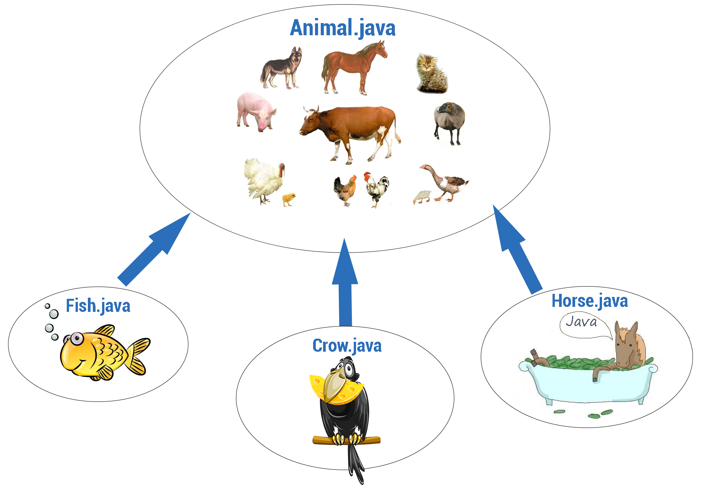

Полиморфизм
Полиморфизм - свойство системы, позволяющее использовать объекты с одинаковым интерфейсом без информации о типе и внутренней структуре объекта. Полиморфизм является фундаментальным свойством системы типов. Различают статическую неполиморфную типизацию (потомки Алгола и BCPL), динамическую типизацию (потомки Lisp, Smalltalk, APL) и статическую полиморфную типизацию (потомки ML). Использование ad hoc полиморфизма наиболее характерно для неполиморфной типизации. Параметрический полиморфизм и динамическая типизация намного существеннее, чем ad hoc полиморфизм, повышают коэффициент повторного использования кода, поскольку определенная единственный раз функция реализует без дублирования заданное поведение для бесконечного множества вновь определяемых типов, удовлетворяющих требуемым в функции условиям. С другой стороны, временами возникает необходимость обеспечить различное поведение функции в зависимости от типа параметра, и тогда необходимым оказывается специальный полиморфизм.